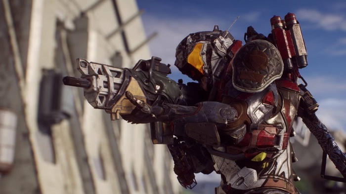
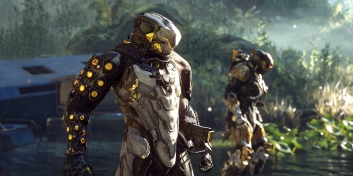

Глава EA признаёт проблемы Anthem, но верит в авторов и рассчитывает на 7–10 лет жизни франшизы
В интервью для GameDaily.biz глава Electronic Arts Эндрю Уилсон (Andrew Wilson) признал, что у Anthem есть серьёзные проблемы — так, стремление скрестить сюжетную игру с лутер-шутером обернулось неудачей. Однако издатель планирует поддерживать боевик и дальше.
«Мы собрали две группы игроков, оценивавших эмоциональную ценность игры по двум различным векторам, — объясняет Уилсон. — Одни ждали традиционного сюжетного контента от BioWare, а другие — контента в стиле приключенческого экшена».
Однако дальше, отмечает босс EA, всё пошло не по плану. Игроки стали жаловаться, что не получили желаемого, — некоторые ожидали 100 часов сюжетной кампании, в то время как другие надеялись на развитие идей Destiny. Но ни того, ни другого в полном объёме игра предложить не могла.
«Обещание состояло в том, что мы сможем играть вместе, но это не очень хорошо работает», — признаётся Уилсон. По его словам, несмотря на неважный старт игры, EA всё ещё верит в то, что команда разработчиков способна всё исправить, поэтому бросать проект пока никто не собирается.
Более того, Уилсон убеждён, что мир Anthem достаточно интересен для того, чтобы франшиза прожила ещё 7–10 лет. Кроме того, он говорит, что BioWare сейчас тестирует «эластичность» своего бренда — как среди давних поклонников, ожидающих «экспириенса» вроде Baldur's Gate, так и среди тех, кто начал следить за играми студии совсем недавно.
«Команды в BioWare продолжат приходить на работу каждый день, слушать своих старых и новых игроков и стремиться выполнить обещания, которые они им дали», — заключил Уилсон.
Anthem всё ещё жива — авторы представили свежее обновление, а о «Катаклизме» расскажут завтра
В последнее время об Anthem почти ничего не слышно — казалось, что игра окончательно загибается в агонии. Но нет, за жизнь шутер от BioWare ещё поборется: спустя несколько недель с выхода последнего апдейта разработчики рассказали о ближайшем будущем проекта. Во-первых, студия представила обновление до версии 1.2. Существенных нововведений не ждите — в основном там множество улучшений, однако также есть дополнительные легендарные миссии и возможность быстрого перемещения в режиме свободной игры между локациями, где находится страйдер. Во-вторых, менеджер сообщества Anthem Джесси Андерсон (Jesse Anderson) объявил на форуме Electronic Arts, что завтра разработчики проведут стрим, на котором расскажут о «Катаклизме» — последней главе первого акта «Отзвуки реальности», которая должна была выйти в конце мая. Трансляция начнётся на Twitch и Mixer 30 мая в 23:00 по московскому времени.
«Катаклизм» должен добавить в боевик новый «эндгейм»-контент, который авторы описывали как одну из самых сложных и увлекательных игровых «активностей» — скорее в духе рейдов в Destiny, чем нынешних заданий Anthem. Студия намерена провести пользовательское тестирование этой главы до того, как она официально увидит свет. Собрать отзывы о предстоящей добавке поможет публичный тестовый сервер на PC. Он позволит опробовать некоторый контент по мере его разработки и предоставит дополнительную возможность для обратной связи. Напомним, что предыдущее обновление для Anthem вышло три недели назад — 7 мая. С тех пор раздел игры на Reddit успел растерять множество активных пользователей, а те, кто остались, возмущались затянувшимся молчанием разработчиков — некоторые переживали, что придётся ждать до самой E3.
Несколько боссов покинули Anthem ради Dragon Age 4, но BioWare уверяет, что на Anthem это не скажется
Роды Anthem окончились, но игра вышла недоношенной, так что очень многое сейчас зависит от поддержки после релиза. А с ней пока справляются не шибко успешно. Наверное, именно поэтому фанаты весьма болезненно отреагировали на вести о том, что несколько боссов Anthem покидают игру и переключаются на Dragon Age 4. Портал GamesRadar насчитал трёх лидеров, которые перестали работать над Anthem: речь об исполнительном продюсере Марке Дарре (Mark Darrah), ведущем продюсере Майкле Гэмбле (Michael Gamble) и ведущем директоре Джонатане Уорнере (Jonathan Warner). Как пишет GamesRadar, лишь Уорнер намерен вернуться к Anthem после отдыха.
We aren't working on Dragon Age 3
— Mark Darrah (@BioMarkDarrah) May 1, 2019
We aren't working on Dragon Age 5
...
I guess that's that.
Дарра и Гэмбл в «Твиттере» намекнули, что теперь занимаются Dragon Age 4. Спустя некоторое время сотрудники BioWare постарались пресечь спекуляции: студия всё ещё верна Anthem, поддержка игры не станет слабее из-за того, что она лишилась нескольких лидеров. За трудным ребёнком присматривает огромная команда, состоящая из сотрудников подразделений в Эдмонтоне и Монреале. Новая Dragon Age официально анонсирована, но у неё, судя по сведениям инсайдеров, тоже не всё гладко.
Along with @BenIrvo and I, we've got a big team between Austin and Edmonton focused and motivated for improving the game. We appreciate your support and for being on this journey with us.
— Chad Robertson (@crobertson_atx) May 3, 2019